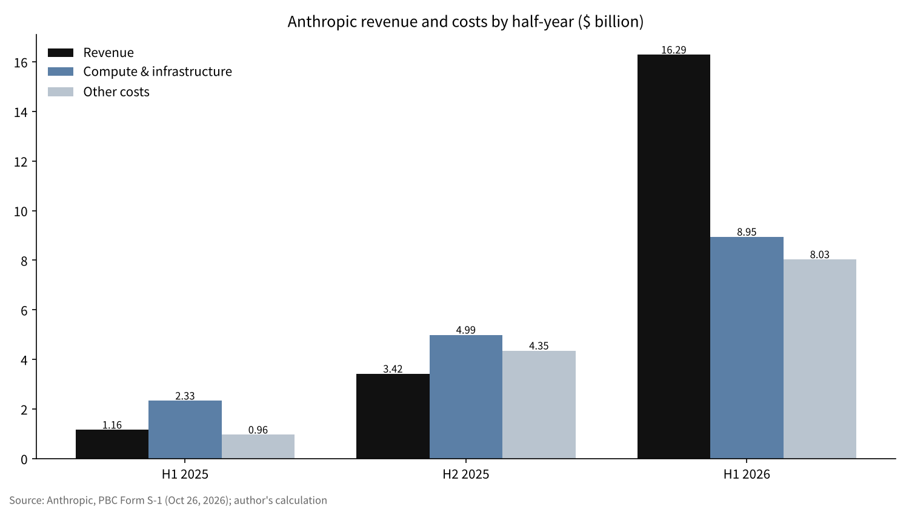
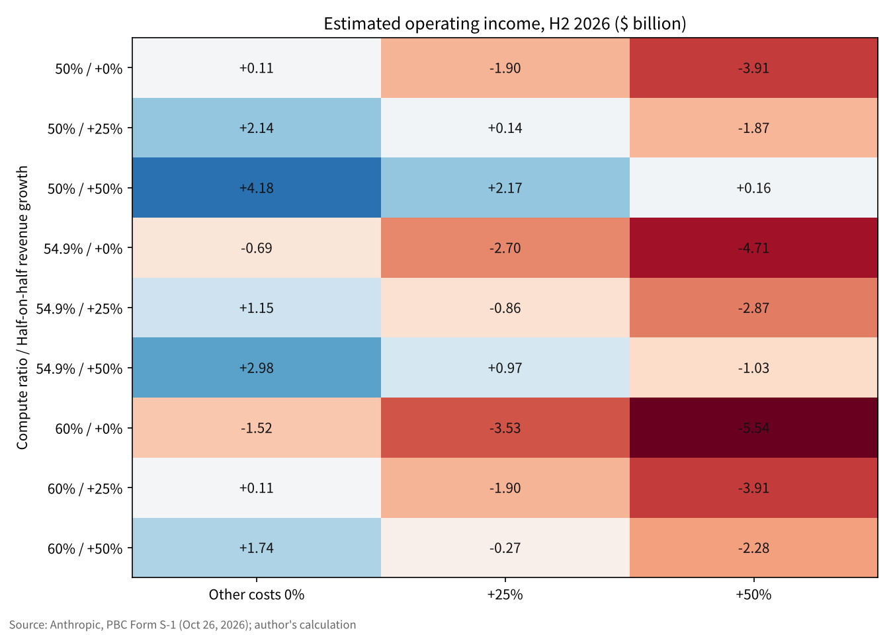

Reading Anthropic's S-1: when profit comes into view, and what the heaviest cost is
From Japan, I read the Form S-1, the registration document for a listing, that Anthropic publicly filed with the US Securities and Exchange Commission (SEC) on October 26, 2026. The planned listing venue is Nasdaq, under the ticker ANT.
Revenue for January–June 2026 was $16.286 billion, about 14 times the same period a year earlier. Over the same half-year, however, the net loss reached $80.748 billion.
I narrow this piece to two questions. When can the core business be estimated to reach profitability? And where does the money go, and what is the heaviest cost?

The question and the background
A Form S-1 is the registration statement filed with the SEC when a company first offers shares to the public in the United States. It discloses the business, the financial statements, risk factors and the share structure in a form that lets investors make a judgment [2]. This filing runs to roughly 130,000 characters in the main text alone, and it converts the confidential draft (DRS) submitted in June into a public version [1][3].
Anthropic is incorporated as a public benefit corporation (PBC) under Delaware law. A PBC is a corporate form that requires directors to balance shareholders' interests with the public benefit purpose stated in the charter and with consideration for stakeholders [6]. In the S-1, the company states its public benefit purpose as "the responsible development and maintenance of advanced AI for the long-term benefit of humanity" [1].
A listing document is the first time a company shows its own numbers widely while bearing legal liability for them. I would like to reach answers from the numbers in the filing itself, more than from the figures in news headlines. "Profit" here means accounting operating income (revenue minus operating expenses). Net income and loss absorb large swings from the revaluation of convertible notes, derivatives and similar items, so I do not use it as the yardstick for the economics of the core business [1].
Data and method
The figures I use are limited to the three periods in the S-1's summary financial table: January–June 2025, full-year 2025 and January–June 2026 [1]. Gross margin, customer concentration and total contract value circulating in news reports and secondary sources could not be verified against the S-1 text, so I leave them out of the calculations.
I split expenses into two groups. One is "compute and infrastructure costs," which appears as its own line in the summary table; the other is "all other expenses," obtained by taking total operating expenses (revenue minus operating income or loss) and subtracting compute and infrastructure costs. The latter lumps together personnel, research and development, sales and so on. When placing full-year 2025 next to half-year figures, I subtract January–June from the full year to derive July–December and compare half-year with half-year.
I gauge the timing of profitability by taking January–June 2026 as the base and estimating operating income or loss for the next half-year (July–December). The formula is "revenue × (1 − compute ratio) − all other expenses," and I vary three assumptions three ways each.
Results: revenue grew and losses narrowed
| Period | Revenue | Compute and infrastructure costs | All other expenses | Operating income (loss) | Operating margin |
|---|---|---|---|---|---|
| Jan–Jun 2025 | $1.163 billion | $2.334 billion | $0.964 billion | −$2.135 billion | −183.6% |
| FY2025 | $4.585 billion | $7.326 billion | $5.319 billion | −$8.060 billion | −175.8% |
| Jan–Jun 2026 | $16.286 billion | $8.945 billion | $8.034 billion | −$0.693 billion | −4.3% |
Revenue rose about 14-fold, from $1.163 billion in January–June 2025 to $16.286 billion in January–June 2026 [1]. The operating loss narrowed from $2.135 billion to $0.693 billion, and the operating margin moved from minus 183.6% to within reach of minus 4.3%. For April–June 2026 alone, the filing states that revenue rose 1,368% from the same period a year earlier [1].
Taking July–December 2025 on its own, revenue was $3.422 billion, compute and infrastructure costs were $4.992 billion, and the operating loss was $5.925 billion. A state in which compute costs exceeded revenue continued into the second half of 2025.
The company discloses adjusted operating income of $1.618 billion, a profit, for January–June 2026 [1]. Because that is a different yardstick from accounting operating income or loss, I rely mainly on the accounting figures in this piece.


Results: the heaviest cost is compute
Among expenses, the largest single line item is compute and infrastructure costs. In January–June 2026 it was $8.945 billion, 52.7% of total operating expenses of $16.979 billion. The share was 57.9% for full-year 2025 and 70.8% for January–June 2025.
Measured against revenue, the change is larger still. Compute and infrastructure costs were 200.7% of revenue in January–June 2025 and 159.8% for full-year 2025, and fell to 54.9% in January–June 2026. A company that spent $2 of compute to earn $1 of revenue now gets by with a little over half of that dollar.
Why is compute so heavy? Language model performance is known to improve along a power law as the compute, data and model size used in training increase [4]. It has also been shown that, within the same compute budget, allocating optimally between model size and data reaches the same performance at lower cost [5]. The closer a company is to the frontier, the more its structure pushes it to keep adding compute, and the tilt of costs toward compute can be called a feature of the business.
In its risk factors, the S-1 states that whether the company can stay at the frontier (the leading edge of the technology) depends heavily on securing compute [1]. Some reports say the compute contracts include commitments payable even if the capacity goes unused; I have not included those amounts in my calculations.
Results: who pays, and how much cash is on hand
Revenue is spreading across large enterprise customers. For the trailing twelve months as of September 30, 2026, more than 11,900 customers paid $100,000 or more a year, more than 1,900 paid $1 million or more, and about 250 paid $10 million or more [1]. On customer concentration, the filing says a substantial portion of revenue and accounts receivable is concentrated among a limited number of customers, and it gives no percentages [1].
Cash on hand, combining cash and short-term investments, was $131.65 billion as of June 30, 2026 [1]. Set against the operating loss of $0.693 billion for January–June 2026, the numbers for this half-year give no sign of the company running out of cash because of losses in the core business. As a use of funds, I think securing compute weighs more heavily than the losses.
The governance structure also differs from a typical listed company. The Long-Term Benefit Trust elects a majority of the board through a single Class T share, and a single Class F share on the founders' side carries 50.1% of the voting power on general matters [1]. Investors who buy after the listing would hold shares on the premise that they have little influence over the company's direction.
Sensitivity analysis
I varied operating income or loss for July–December 2026 under three assumptions. They are half-year revenue growth (0%, 25%, 50%), growth in all other expenses (0%, 25%, 50%) and the compute ratio (50%, 54.9%, 60%).
| Compute ratio | Revenue growth | Other expenses 0% | Other expenses +25% | Other expenses +50% |
|---|---|---|---|---|
| 50% | 0% | +$0.109 billion | −$1.900 billion | −$3.908 billion |
| 50% | +25% | +$2.145 billion | +$0.136 billion | −$1.872 billion |
| 50% | +50% | +$4.180 billion | +$2.172 billion | +$0.164 billion |
| 54.9% | 0% | −$0.689 billion | −$2.698 billion | −$4.706 billion |
| 54.9% | +25% | +$1.147 billion | −$0.861 billion | −$2.870 billion |
| 54.9% | +50% | +$2.983 billion | +$0.975 billion | −$1.034 billion |
| 60% | 0% | −$1.520 billion | −$3.528 billion | −$5.537 billion |
| 60% | +25% | +$0.109 billion | −$1.900 billion | −$3.908 billion |
| 60% | +50% | +$1.738 billion | −$0.271 billion | −$2.279 billion |
Of the 27 cases, 11 yield an operating profit. If the compute ratio is held at 54.9%, the same as in January–June, and all other expenses do not increase, operating income reaches zero when half-year revenue grows 9.4% (to $17.823 billion).
On the other hand, if all other expenses grow at the same pace as revenue, profit is reached in no case except where the compute ratio falls to 50%. I read this as saying that what sets the timing of profitability is the gap between revenue growth and expense growth, more than the size of revenue growth.

Discussion
There is also an opposing view. The fall in the compute ratio to 54.9% may be just a matter of expense recognition lagging behind the surge in revenue. Once training of a new model begins, the ratio could jump again. That the ratio stood at 145.9% in the second half of 2025 shows how wide the swings can be.
The limits of the data are also significant. The S-1 summary table gives half-year figures, and revenue for July–September 2026 is left blank [1]. The breakdown of all other expenses (personnel, stock-based compensation, litigation settlements and so on) cannot be separated out from the summary table. News reports say the company recorded a $1.5 billion copyright litigation settlement in 2025 [8].
Measured against the $131.65 billion on hand, even if the operating loss returned to several billion dollars per half-year, the company would not be at a scale where funds run short soon. The question is less the amount of cash than how far into the future the compute contracts lock in payments, and that total needs to be checked in the S-1 text.
There are two benchmarks for checking this estimate. One is the sign of operating income or loss for July–December 2026, in the amended S-1 filed before the listing or in the first earnings report after it. The other is whether the compute ratio stays in the 50% range or rises again.
Conclusion
As far as the S-1 numbers show, Anthropic's core business had reached an operating margin of minus 4.3% as of January–June 2026. If the compute ratio holds at its current level and revenue grows by about a tenth in a half-year while all other expenses are kept in check, the arithmetic puts an operating profit within reach as early as the second half of 2026.
The heaviest cost is compute, which accounts for a little over half of operating expenses. Most of the $80.7 billion net loss consists of non-cash valuation losses, and it needs to be read separately from the economics of the core business [1][7]. If the numbers change in an amended filing or the first earnings report, this estimate will change too.
How I see it
I have decided that if Anthropic lists, I will buy about $63,412 worth of its shares. Once it lists, I intend to hold for 10 to 20 years. This S-1 gave me nothing that would change that view.
What I most wanted to know was when it would turn profitable and what the money is spent on. The answer was that more than half of the money goes to compute, and that the core business has come to within one step of profitability. Tomorrow I will ask Nomura Securities whether it has an allocation of IPO shares, and if not, I will buy in the market on the listing day.
Sources
- Anthropic, PBC "Form S-1 Registration Statement" SEC EDGAR, 2026-10-26 https://www.sec.gov/Archives/edgar/data/2130357/000162828026067168/anthropicpbc-sx1.htm
- SEC "Form S-1 General Instructions" https://www.sec.gov/files/forms-1.pdf
- Anthropic Newsroom (s1-sec) 2026-10-26 https://www.anthropic.com/news/s1-sec
- Kaplan, J. et al. "Scaling Laws for Neural Language Models" arXiv:2001.08361, 2020 https://arxiv.org/abs/2001.08361
- Hoffmann, J. et al. "Training Compute-Optimal Large Language Models" arXiv:2203.15556, 2022 https://arxiv.org/abs/2203.15556
- Delaware Code Title 8, Chapter 1, Subchapter XV "Public Benefit Corporations" https://delcode.delaware.gov/title8/c001/sc15/
- Reuters (Newsweek Japan) "Anthropic publishes US IPO filing: huge losses, with revenue expanding rapidly" 2026-10-26 https://www.newsweekjapan.jp/articles/-/338062
- TheWrap "Anthropic Reveals $80.7 Billion Loss, $16.3 Billion in Revenue in IPO Filing" 2026-10-26 https://www.thewrap.com/industry-news/tech/anthropic-ipo-filing-80-billion-loss-revenue/
Photos: İsmail Enes Ayhan, Taylor Vick (Unsplash). Charts by YUKI CAPITAL
I record my daily numbers and decisions on X.